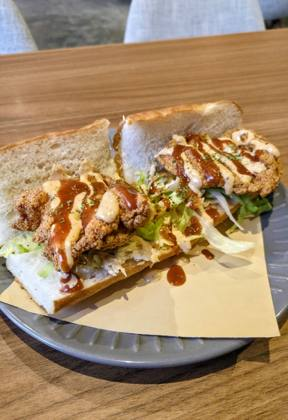
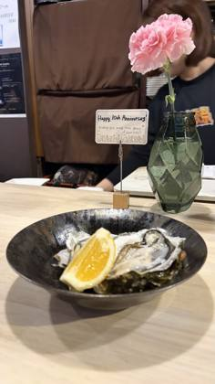
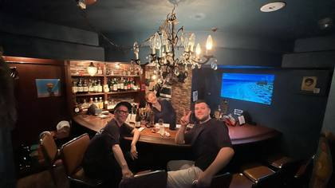

Japan
3 restaurants · 13 photos
NZ/AU ?

Gator's Cajun KitchenIwakuni · 6NZ/AU ?
Shellfish,Shrimp&CrabOsaka-shi · 6NZ/AU ?
Cajun MoonOsaka-shi · 1Every boil listing found · 5
Google Maps listings whose name says boil / crawfish / Cajun / crab etc. Swept 20 Oct 2026. Not all verified as bag boils; tap to open the listing.
Fukuoka-shi · 1
- GOLDEN CRAB Louisiana Seafood Fukuoka-shi
Ginowan · 1
- KAI HARU Cajun shrimp okinawa Ginowan · ★4.8 (46)
Iwakuni · 1
- Gator's Cajun Kitchen Iwakuni, Marifumachi, 3 Chome−1−23 1F · ★4.7 (288)
Osaka-shi · 2
- Cajun Moon Osaka-shi, 7, 曽根崎新地1-7-3 北新地プラザビル7階D号 · ★4.7 (23)
- Shellfish,Shrimp&Crab Osaka-shi, Shinsaibashisuji, 2 Chome−7−11 Nippo Royal Bldg., 1F · ★4.6 (200)